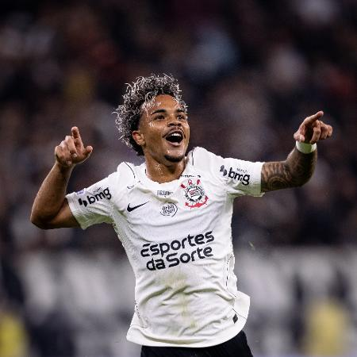

Meu primeiro post
Por: Rafael Gevenka
O atacante Kaio César vive um momento de consolidação e protagonismo na temporada de 2026 pelo Corinthians. Contratado em janeiro por empréstimo junto ao Al-Hilal da Arábia Saudita, o ponta-direita de 22 anos assumiu um papel de destaque no setor ofensivo alvinegro, oferecendo velocidade, drible e profundidade sob o comando do técnico Fernando Diniz.